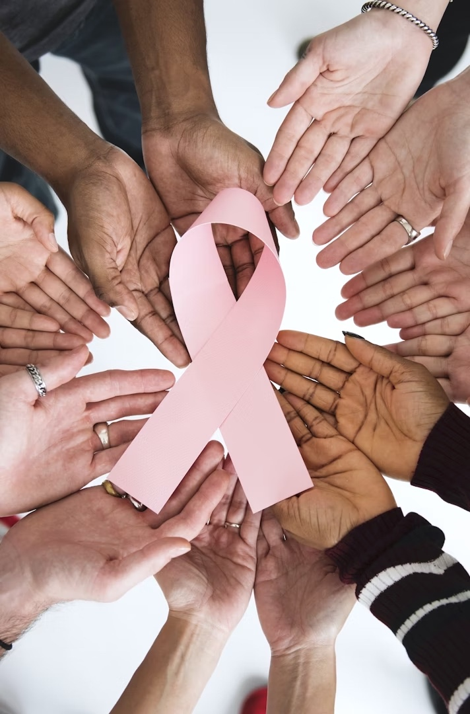

Site hand-crafted and hosted by GitHub.
© 2025. All rights reserved.
Let's connect!
When we think about patient care, we often picture medical tests, treatment plans, and conversations with doctors. But good care is not only about what happens during appointments. It’s also about how prepared patients feel to participate in those conversations. This study explores how social support can empower women with breast cancer to be more engaged in their care.
Patient participation is more than showing up to appointments. It includes asking questions, sharing concerns, understanding treatment options, and feeling confident in conversations with providers. Research shows that when patients are more involved, they tend to have better outcomes. Yet for many people, participating in their own care can feel overwhelming, especially in the context of a breast cancer diagnosis.
We analyzed data from 661 women with breast cancer who were part of a larger clinical trial. Participants completed surveys across three time points to help us understand how social support, emotional coping, and health information skills influenced their role in the treatment process. We used both cross-sectional and longitudinal data to track changes over time.
We found that women who felt more supported in their daily lives also felt more confident navigating health information and making sense of their care. This, in turn, made them more active participants in their treatment decisions. In short, support networks outside the clinic play a powerful role in what happens inside it.
Click here to view the article.
Site hand-crafted and hosted by GitHub.
© 2025. All rights reserved.
Let's connect!